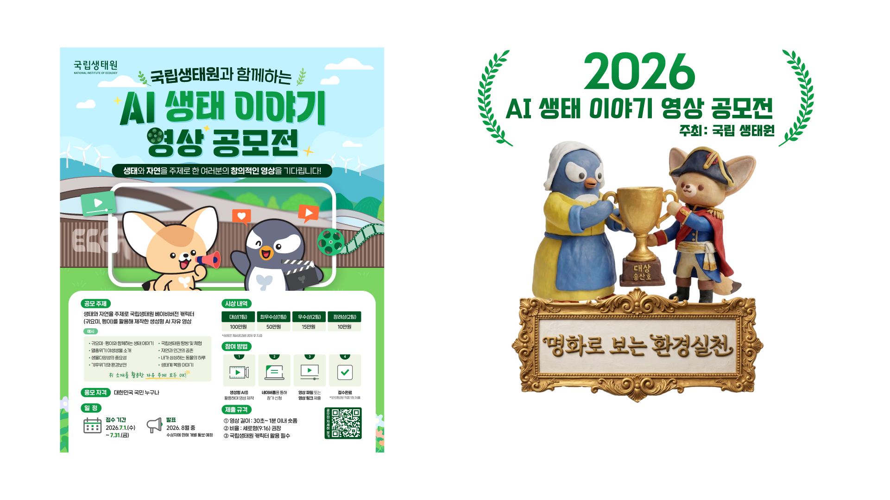
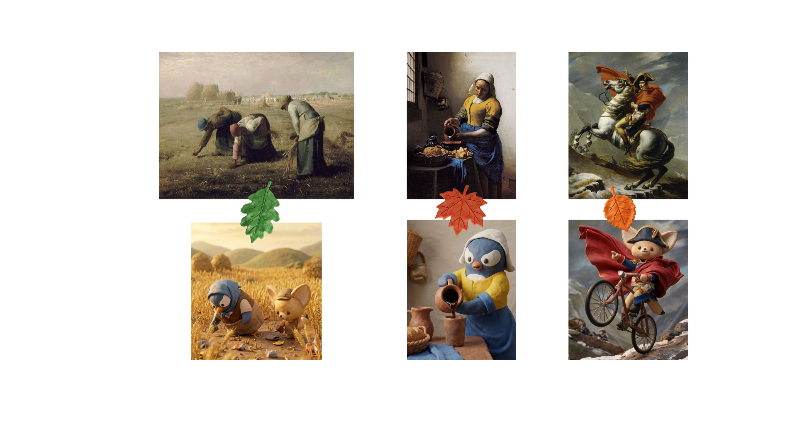
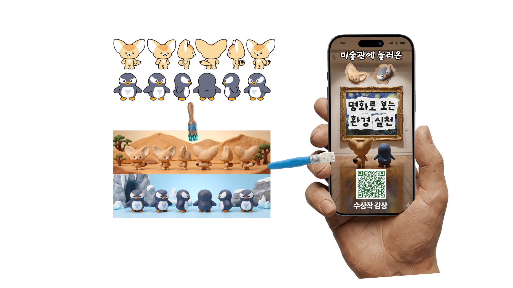

2026 · AI 생태 이야기 영상 공모전

참여계기
생성형 AI로 기획·이미지·영상·편집을 혼자 도전 해보는 계기를 찾고있던 중에 결과를 검증받을 수 있는
공모전을 찾게되어 도전해보았고 그결과 대상을 수상하였습니다.

기획의도
환경보호 실천이라는 주제는 많이 쓰인 내용이라 생각. 같은 내용을 말하기 보다는 바라보는 방식의 차별점을 주기위해 재밌는 시각에서
바라보면 어떨까 하는 생각에 어릴때 즐겨봤던 클레이 애니메이션 스타일과 미술작품이라는 컨셉을 생각 하게 되었습니다.

제작과정
요구사항 : 원본캐릭터를 응용, 9:16비율
아트 스타일 : 클레이 애니메이션
사용된 AI : 구글 FLOW
기타 프로그램 : 프리미어 프로
출판편집 및 웹툰 제작 이력

주요 담당 업무
해외 단행본 만화의 국내 정식 발간을 위한 식자·어시스트 편집 작업과, 기존 출판 만화를 모바일 스크롤 환경에 맞춘 웹툰 버전으로 재편집하는 작업을 진행했습니다.

작업 내용 및 사용 프로그램
작업 기간 : 2019 — 현재
주요 작업 : 대사 식자 디자인, 효과음 리터칭, 웹툰 컷 재구성 및 연출 보정
사용 프로그램 : 포토샵(Photoshop), 일러스트레이터(Illustrator), 인디자인(InDesign)